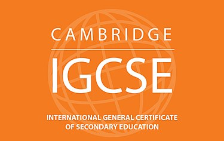

My Education History
On this page, you will find out where I was educated during my school life and where I am currently.
IGCSE
I graduated from Cambridge International School Dubai with honours in both my IGCSE and AS as well as A-level examinations.

I gave my first board exams in June of 2022 and achieved 7 A*s in a wide variety of subjects, from Mathematics, all the physical sciences and Computer Science to English First Language and English Literature, further validating my proficiency in the English language.
AS and A-Levels
During my AS and A-levels, I took 4 subjects: Computer Science, Further Mathematics, Physics and Chemistry. I studied Cambridge A-Levels for Computer Science and Further Mathematics and Physics and Chemistry as Oxford AQA A-Levels.
In Computer Science, I selected the Python programming language and was able to gain a basic understanding of OOP programming in Python during my A-levels. I also studied a wide range of topics in Computer Science from AI to operating systems and a basic functionality of how computers and their internal components work.
From Further Mathematics, I was able to learn polar coordinates and linear algebra as well as advanced probabilistic statistics. I also learned advanced mathematics necessary for a successful computer scientist during my course of AS and A-levels. I successfully completed the A-levels with 4 A stars with more achievements during this period.